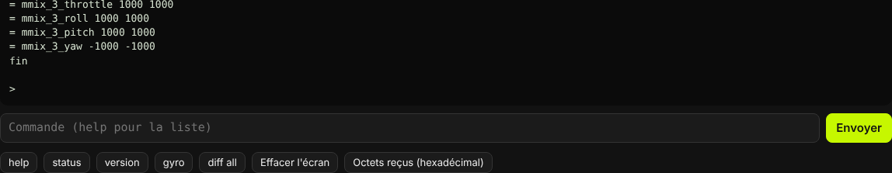
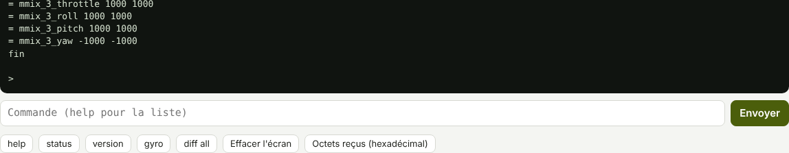

La ligne de commande parle directement au firmware, par l'USB. Elle sert à lire l'état de la
carte (status), à changer un réglage (set), à copier ou recoller tous les réglages
(diff all) et à gérer le journal de vol.
L'onglet
Onglet Ligne de commande (groupe Outils), carte connectée. Taper une commande dans le champ, puis
Entrée ou Envoyer. Les boutons du bas envoient les commandes courantes : help,
status, version, gyro, diff all.


Bas de l'onglet : la fin d'une réponse de valeurs (une ligne par réglage : valeur actuelle,
valeur enregistrée, puis « fin »), le champ de saisie et les boutons.
Coller plusieurs lignes (un diff all, des réglages) : le logiciel demande une confirmation, puis envoie
une commande par ligne, l'une après l'autre.
Une ligne qui commence par # est un commentaire : la carte l'ignore.
Une ligne fait au plus 127 caractères.
Effacer l'écran vide la zone de texte. Octets reçus (hexadécimal) affiche et copie les derniers
octets reçus de la carte : utile quand elle semble muette.
Le firmware répond sans accents (Reglages enregistres).
Les réponses
Début de la réponse
Sens
REFUSE :
Commande refusée, avec la raison (valeur hors plage, drone armé…). Rien n'a
changé.
Ignore :
Réglage ou commande de Betaflight reconnu, sans effet dans XPro ; la raison
suit entre parenthèses.
Reglage inconnu :
Ce nom n'existe ni dans XPro ni dans la liste des réglages de
Betaflight reconnus. get donne la liste.
Commande inconnue :
Commande qui n'existe pas. help donne la liste.
Une mesure inconnue ou trop ancienne s'affiche --, jamais un chiffre.
Les commandes
Liste relevée dans le firmware 0.8.4. help (ou aide) l'affiche dans la carte. Il n'y
a pas de commande dump : diff all donne tous les réglages.
Une mesure du gyroscope (°/s), de l'accéléromètre (g), la température et l'attitude
(roulis, tangage, cap).
flux
Mesures 10 fois par seconde ; une touche pour arrêter.
flux moteurs
Gyroscope et moteurs 50 fois par seconde (graphiques du logiciel).
rx
Récepteur : état, trames par seconde, LQ, RSSI, SNR, 16 voies en µs.
bat
Batterie : tension, éléments, tension par élément, courant, consommation.
Réglages
Commande
Rôle
get [nom]
Réglages : valeur, plage, défaut, unité, valeur enregistrée. get acc :
tous ceux qui commencent par « acc ».
set nom = valeur
Change un réglage, appliqué tout de suite. Valeur hors plage
refusée.
save
Enregistre les réglages dans la carte. Refusé drone armé.
diff, diff all
Réglages différents du défaut, ou tous, au format de
Betaflight : texte à recoller tel quel.
defaults
Remet les réglages par défaut (gardés seulement après save).
Refusé drone armé.
valeurs [nom]
Pour le logiciel : nom, valeur actuelle, valeur enregistrée.
profile [0-5]
Profil PID actif (0 = profil 1), format de Betaflight ; sans nombre : le
profil actif.
rateprofile [0-5]
Profil de taux actif (0 = profil 1).
feature [-]AIRMODE
AIRMODE et TELEMETRY ; feature seul : la liste.
simplified_tuning apply | disable
Réglage simplifié (curseurs
simplified_*) sur le profil PID actif.
aux
Plages des modes, format de Betaflight (aux 0 0 1 1925 2100 0 0 : ARM sur
AUX2).
serial
Fonction et débit des ports série, format de Betaflight ; pris en compte après
save et redémarrage.
mixer QUADX | CUSTOM, mmix
Mixeur Quad X ou personnalisé
(mmix n gaz roulis tangage lacet).
beeper
Liste des bips ; beeper -NOM coupe, beeper NOM active
(ALL : tous).
Journal de vol
Commande
Rôle
journal
État du journal, place utilisée.
journal_effacer
Efface tout le journal (une minute et plus). Refusé drone armé.
journal_lire A N
N octets depuis l'adresse A, en hexadécimal (65 536 au plus), pour le
logiciel. Refusé armé ou pendant l'effacement.
Moteurs, hélices retirées
Commande
Rôle
moteur_test on | off
Test des moteurs. Tout s'arrête sans ordre pendant 1 s.
Refusé drone armé.
moteur N P
Moteur N (1 à 4, ou tous) à P %, 25 au plus, pendant le test.
moteurs a b c d
Les 4 moteurs en une commande (test actif, 25 au plus).
armement_banc on | off
Armer avec le logiciel connecté (sinon refus
LOGICIEL CONNECTE). Jamais enregistré, coupé à la déconnexion.
Carte
Commande
Rôle
calib_acc
Calibrage de l'accéléromètre, carte à plat et immobile ; enregistré. Refusé si
la carte bouge.
beep
Essai du buzzer.
pinio 1 on | off
Essai : PINIO 1 au niveau armé ou désarmé.
bl
Redémarrage en mode DFU, pour flasher.
reboot
Redémarrage.
test_chien_de_garde
Bloque le firmware exprès : la carte doit redémarrer seule en moins
de 2 s.
Commandes de Betaflight
Un diff all de Betaflight contient des commandes sans équivalent dans XPro. Elles sont reconnues et répondent
Ignore : … (commande de Betaflight sans effet dans XPro : raison), sans faux refus :
Commande
Raison donnée
map
voies dans l'ordre AETR
resource, timer, dma
broches, minuteries et DMA fixés par la carte
beacon
bips par les moteurs : non repris
rxfail
liaison perdue : manches au centre, gaz en bas, AUX maintenues
rxrange
plages CRSF standard
vtxtable
table VTX vide sur KarRmen
vtx
émetteur Walksnail réglé dans les lunettes
vtx_info
pas d'émetteur commandé
board_name, manufacturer_id, mcu_id, signature
carte et
processeur fixes ; pas de signature
batch
commandes exécutées une par une
defaults nosave
rien n'est remis à zéro par un texte collé
smix, servo
pas de servo
adjrange
pas de réglage en vol par interrupteur
led, color, mode_color
pas de bandeau LED
gpspassthrough, serialpassthrough
pas de GPS, pas de relais série
timezone
pas d'horloge réelle
osd_layout
places OSD par les réglages osd_*_pos
De même, set d'un réglage de Betaflight sans effet dans XPro répond Ignore : nom sans effet
dans XPro (raison). defaults seul, tapé à la main, remet bien les défauts de XPro.
La sortie de status
Exemple réel : status de KarRmen relevé au retour du premier vol V1 (18/10/2026, firmware 0.8.3),
batterie et USB branchés, drone désarmé. La sortie est copiée telle quelle, par blocs.
Carte et démarrage
TRUEGLIDE 0.8.3-banc (01d85e9) SPEEDYBEEF405MINI
Processeur : STM32F405/407, flash 1024 Ko, horloge 168 MHz
Temps depuis le demarrage : 77 s
Cause du demarrage : mise sous tension
Depuis la mise sous tension : redemarrages par chien de garde 0, defauts du processeur 0
Ligne
Ce qu'elle dit
1
Produit, version, étape (banc), commit, carte : comme version.
Processeur
Horloge à 168 MHz. Sans quartz, la ligne ajoute « QUARTZ ABSENT ».
Cause du demarrage
mise sous tension, redemarrage demande (reboot),
retour du mode DFU (flash ou bl), CHIEN DE GARDE (firmware bloqué), bouton reset,
baisse de tension…
Depuis la mise sous tension
Redémarrages par le chien de garde et défauts du processeur : 0 attendu.
Gyroscope, réglages, calibrages
Gyroscope : ICM-42688-P (identifiant 0x47), SPI 10500 kHz
Mesures : 8002 par seconde ; lues 622281, invalides 0, erreurs de bus 0
Boucle la plus longue (derniere seconde) : 2057 us
Reglages : enregistres dans la carte (enregistrement 9)
Orientation de la carte : appliquee (capteur tourne de 270 deg, sens horaire)
Calibrage de l'accelerometre : fait (decalage x 5 y 9 z 6 mg)
Attitude : estimee (gyroscope + accelerometre), cap relatif depuis le calibrage
Calibrage du gyroscope : fait (decalage x 0.32 y 0.03 z 0.25 deg/s) ; suivi actif (61 s immobiles prises en compte)
Ligne
Ce qu'elle dit
Gyroscope
Capteur reconnu et vitesse du bus. Un capteur muet affiche « ABSENT ou muet ».
Mesures
Mesures du gyroscope par seconde (8 000 attendues), mesures rejetées, erreurs du bus.
Boucle la plus longue
Tour le plus long de la boucle principale (USB, ligne de commande, récepteur,
OSD…) dans la dernière seconde. La boucle rapide a sa propre mesure, ligne Regulation.
Reglages
Numéro du dernier enregistrement. « MODIFIES, PAS ENREGISTRES (taper save) » si des valeurs
diffèrent de celles enregistrées ; « ENREGISTREMENT ILLISIBLE » après un autre firmware.
Orientation
Rotation du capteur sur la carte (gyro_align, 270° sur la F405 Mini).
Calibrage de l'accelerometre
Décalage enregistré, en mg ; « PAS FAIT » sinon.
Calibrage du gyroscope
Fait au démarrage, carte immobile ; « EN ATTENTE » si elle bouge. Le suivi
corrige ensuite la dérive due à la chauffe, pendant les secondes immobiles.
Récepteur, batterie, ports
Recepteur : CRSF sur UART2 (420000 bauds) ; ACTIF, 306 trames/s, LQ 99 %, RSSI -41 dBm
octets 617028, erreurs CRC 28, erreurs serie 28, pertes de signal 0
Batterie : 14.89 V ; 4 elements, 3.72 V par element, OK
courant : 0.00 A (mesure -0.32 A : decalage du capteur, ibata_offset), consomme 0 mAh ; alimentation du processeur 3.28 V
Buzzer : PC15, actif a l'etat bas ; joue : AUCUN
PINIO 1 : PB11 au niveau haut (comme Betaflight desarme)
UART1 (VIDEO_HD) : MSP 115226 bauds, octets recus 4, envoyes 450642, demandes servies 0 (dont refusees 0), erreurs de controle 0, erreurs serie 785, octets non envoyes 0
UART2 (RECEPTEUR) : recepteur CRSF (voir Recepteur)
UART3 (AUCUNE) : libre
UART4 (MSP) : Bluetooth FERME (bluetooth_mode = OFF) : le module reste visible mais muet
UART5 (AUCUNE) : libre
UART6 (AUCUNE) : libre
OSD MSP : ecrans envoyes 938, sautes (liaison occupee) 0
Ligne
Ce qu'elle dit
Recepteur
Protocole, port, état (ACTIF, SIGNAL PERDU, AUCUN OCTET RECU, AUCUNE TRAME DE VOIES), trames
par seconde, qualité de liaison. Puis octets reçus, trames abîmées (CRC), erreurs série, pertes de signal.
Batterie
Tension, nombre d'éléments, tension par élément, état (OK, FAIBLE…). « ABSENTE (USB seul) »
sans batterie.
courant
Le courant affiché n'est jamais négatif : ici la mesure brute vaut −0,32 A (décalage du
capteur), affichée 0,00 A. Puis la consommation et la tension d'alimentation du processeur.
Buzzer, PINIO 1
Bip en cours ; niveau de la sortie PINIO 1, qui suit l'armement.
UART1 à UART6
Une ligne par port, avec sa fonction (port_N_function) et ses compteurs.
Le Bluetooth (UART4) est fermé par défaut.
OSD MSP
Écrans d'OSD envoyés aux lunettes, et sautés faute de place sur la liaison.
Armement et régulation
Armement : DESARME ; interrupteur ARM bas ; modes : ANGLE
refus actuels : LOGICIEL CONNECTE
armements 0, refus 0, failsafes 0, temps arme 0 s
Regulation : gyroscope 8002 mesures/s, boucle PID 4001 par seconde (pid_process_denom 2), DShot 4001 trames/s
boucle rapide : la plus longue 104 us, charge 70.0 % du processeur
temps par partie : gyroscope 15.6 us, regulation 63.6 us, reponses des ESC 69.7 us (la plus longue 82 us, pas finies a temps 0)
profil PID 3 (15053S), profil de taux 2 (-) ; AIRMODE ON ; moteurs props out
barometre : DPS310 ou SPL06 (0x76), 965.96 hPa, 12.7 C ; altitude 12.28 m, vitesse verticale -0.02 m/s ; mesures 1945, erreurs 0
TrueGlide : power_guard OFF (limite 100 %) ; relance moteur OFF (relances 0 0 0 0) ; secours OFF ; SPEEDER 0 deg
temperatures des ESC (C) : -- -- -- -- (dshot_edt OFF) ; telemetrie radio ON, trames 3024
filtre RPM : 4 moteurs sur 4 suivis, 3 harmoniques
coupe-bandes dynamiques (Hz) : roulis 156/153/180 tangage 165/136/-- lacet 102/96/--
consigne (deg/s) 4 / -2 / 0 ; gyroscope filtre 0 / 0 / 0 ; gaz 0 %
Ligne
Ce qu'elle dit
Armement
État, interrupteur, modes actifs. refus actuels : ce qui empêche d'armer maintenant
(ici le logiciel connecté). Puis les compteurs depuis le démarrage. En 0.8.4, une ligne « menu des lunettes »
s'ajoute (ouvert ou fermé, ouvertures, enregistrements).
Regulation
Fréquences mesurées : gyroscope à 8 kHz, boucle PID à 8 kHz divisé par
pid_process_denom, trames DShot.
boucle rapide
Tour le plus long (sous 125 µs à 8 kHz) et charge du processeur.
temps par partie
Temps du gyroscope, de la régulation et du décodage des réponses des ESC ; « pas
finies à temps » doit rester à 0. Ici, batterie branchée, les 4 ESC répondent : 69,7 µs (14 µs sur USB seul en
B9).
profils
Profil PID et profil de taux actifs avec leur nom, AIRMODE, sens des moteurs.
barometre
Capteur détecté, pression, température, altitude (remise à 0 à chaque armement).
TrueGlide
État des fonctions TrueGlide : power_guard, relance moteur, télémétrie de secours,
SPEEDER.
temperatures des ESC
-- : la télémétrie DShot étendue est coupée, aucune température n'est
inventée.
filtre RPM, coupe-bandes
Moteurs suivis par le filtre RPM ; fréquences des coupe-bandes dynamiques
par axe (-- : pas de pic trouvé).
État, taille et place utilisée de la mémoire du journal ; place libre en secondes de
vol. Puis, depuis le démarrage : vols, mesures, mesures perdues (0 attendu).
Moteurs
Protocole, ordre envoyé à chaque moteur ; trames envoyées et sautées (0 attendu) ; arrêts du
test faute d'ordre.
DShot bidirectionnel
Réglage dshot_bidir, pôles des moteurs ; captures de réponse coupées
par la trame suivante.
M1 à M4
Vitesse en tr/min (-- sans réponse valide récente), part de réponses manquées dans
la dernière seconde, compteurs. « codage faux » et « controle faux » doivent rester à 0.
Octets USB perdus
Octets perdus entre la carte et le PC, dans chaque sens : 0 attendu.
Points relevés dans cet exemple et notés au journal des essais : réponses absentes des moteurs
3 et 4 (7,1 % et 9,3 %), 28 erreurs CRC du récepteur en 77 s, 785 erreurs série sur l'UART1. Les deux premiers
sont au programme d’une version suivante (pont des ESC : 0.8.6). Le journal était à 35 % : à effacer avant l'essai suivant.
 TRUEGLIDE
TRUEGLIDE